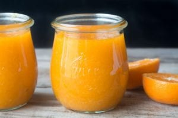
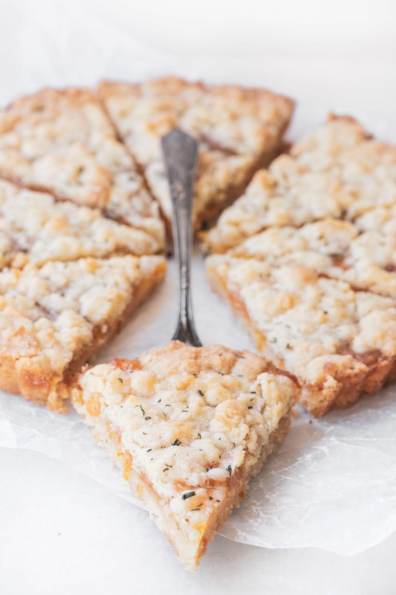

We have 3 options for you to choose.
Our healthy recipes are for you, so if you want to live a good life and eat lunchs that are good for your body, just read this article of our webpage. We have 3 tipes of recipes in every article and we also added an exercise for you to pracise.
Whitout more hesitation, let's start with recipe number one.
Clementine Jam
A clementine is a tangor, a citrus fruit hybrid between a willowleaf mandarin orange and a sweet orange, named for its late 19th-century discoverer.
Clementine Jam has a unique, brilliantly fresh flavor that plays well with all kinds of toast, croissants, scones, and biscuits. It's not a marmalade because there's no bitter peel involved, it's a thick no-pectin jam bursting with sunny citrus that takes just 30 minutes on the stove.

Ingredients
- 3 pounds clementines
- 1 cup sugar
- Juice of 2 lemons
Instrucctions
- Peel the clementines and cut each one in half through the middle to check for seeds.
- Put the fruit, in batches if necessary, in the bowl of a food processor and process until smooth.
- Pour the puree into a heavy pot and add the sugar and lemon juice. Bring the mixture to a boil, then turn down the heat a bit and boil for about 30-40 minutes, stirring fairly often. Do not cover the pot!
- The liquid will foam up at first, but will eventually get absorbed. The mixture will start to thicken and get a little deeper and glossier when it is ready. I like to freeze a small plate and test the jam by dropping some onto it and letting it cool. If the jam firms up, it's done. If not, keep boiling a little longer.
- When it is done, ladle it into clean jars and let cool on the counter. When it reaches room temperature, cover and refrigerate. It will keep at least 10 days in the fridge.

Fresh Tangerine Scones
Fresh Tangerine Scones are buttery, tender, and bursting with citrus thanks to layers of tangerine flavor built right into these flakey pastries. This orange scone recipe will upgrade your breakfast, brunch, or afternoon tea.
Ingredients
- 1/2 cup sugar
- zest of one tangerine, peeled in strips with a vegetable peeler. Just the colored part, no white pith!
- 2 1/4 cups all purpose flour
- 1 Tbsp baking powder
- 1/2 tsp salt
- 8 Tbsp cold unsalted butter, cut in pieces
- 1/2 cup cultured buttermilk
- 1/2 tsp tangerine oil or extract (optional)
For the Glaze
- 1 1/2 cups confectioner's sugar
- tangerine juice, to thin the glaze
- grated tangerine zest
Instrucctions
- Preheat oven to 375 degrees F. Line a baking sheet with parchment paper and set aside.
- Put the sugar and tangerine zest in a food processor and process until the tangerine zest is finely ground and the sugar is pale orange.
- Add the flour, baking powder, and salt to the machine and pulse to combine.
- Drop in the pieces of cold butter and pulse about 20-25 times until the mixture resembles coarse crumbs.
- With the machine running, pour in the buttermilk and extract, and run the machine just until the dough comes together.
- Turn out the dough onto a lightly floured surface and bring it together with your hands until there is no dry flour left. Pat the dough into a flat round, about 1 1/2 inches thick (thicker if you like,) and cut out 8 scones with a 3 inch biscuit cutter. You will have to reform the dough once or twice.
- Put the scones 2 inches apart onto a parchment lined baking pan and put the pan in the fridge while you clean up, about 10-15 minutes.
- Bake the scones for about 20 minutes until just barely starting to turn golden, but don't over bake. They will still be quite pale when done.
Instrucctions for the Glaze
- Mix the confectioner's sugar with enough tangerine juice to make a thick glaze. Whisk or stir well, and let the glaze sit for a few minutes to dissolve any lumps in the sugar. Dip the cooled scones into the glaze and flip them over to dry on a rack. Sprinkle immediately with tangerine zest while the glaze is still wet.
Tangerine Shortbread Tart with Fresh Rosemary
A simple shortbread crumble tart filled with tangerine marmalade and infused with a hint of fresh rosemary.

Equipment
- 9 inch tart pan
Filling
- 1 cup tangerine marmalade
Ingredients
- 1 cup 2 sticks unsalted butter at room temperature
- 2/3 cup sugar
- 2 -3 tsp very finely minced fresh rosemary plus a little extra for garnishing the tart (do NOT use dried)
- 1/4 tsp salt
- 1 tsp vanilla extract
- 2 cups all purpose flour
Instrucctions
- Set oven to 350F Get out a 9 inch tart pan (with removable bottom preferably).
- Cream the butter, sugar, and rosemary together until well combined and fluffy.
- Mix in the salt and vanilla. Add the flour gradually and mix until just combined. There should be no more dry flour left, and the mixture will be crumbly.
- Take approximately 1/2 to 2/3 of the dough and pat it into the bottom of the pan. I like to drop crumbles of the dough all over the bottom to distribute it before I start patting it down, this helps get the bottom covered evenly. Flour your fingertips if necessary.
- Spread the marmalade evenly over the dough. Then, using your fingertips, crumble the remaining dough over the marmalade. It's ok if some of the marmalade shows through.
- Bake for about 35 minutes, until the top is just starting to get a hint of golden, don't wait for it to get brown!
- Let the tart cool for about 15 minutes before removing it from the tart pan. Dust with a little bit of finely minced rosemary, and slice into 8 pieces.
Lunges
The exercise of the day one is Lunges. Challenging your balance is an essential part of a well-rounded exercise routine. Lunges do just that, promoting functional movement, while also increasing strength in your legs and glutes.
How to do lunges?
- Start by standing with your feet shoulder-width apart and arms down at your sides.
- Take a step forward with your right leg and bend your right knee as you do so, stopping when your thigh is parallel to the ground. Ensure that your right knee doesn’t extend past your right foot.
- Push up off your right foot and return to the starting position. Repeat with your left leg. This is one rep.
- Complete 10 reps for 3 sets.